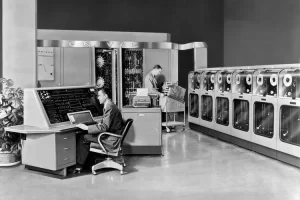

Revolusi Industri 3.0, yang ditandai dengan munculnya teknologi digital dan komputerisasi, membawa dampak signifikan pada industri, masyarakat, dan ekonomi, termasuk peningkatan efisiensi produksi, perubahan pola kerja, serta munculnya bisnis berbasis teknologi.
1. Dampak Industri
- Otomatisasi dan Robotik:
Revolusi Industri 3.0 mendorong otomatisasi proses produksi dengan penggunaan komputer dan robot, meningkatkan efisiensi dan produktivitas.
- Perubahan Keterampilan Tenaga Kerja:
Keterampilan teknis seperti pemrograman, pengoperasian komputer, dan pemeliharaan sistem otomatis menjadi semakin penting, sementara pekerjaan manual cenderung digantikan oleh mesin.
- Munculnya Bisnis Berbasis Teknologi:
Revolusi Industri 3.0 memicu munculnya berbagai bisnis baru yang memanfaatkan teknologi digital, seperti e-commerce, media sosial, dan platform online.
2. Dampak Masyarakat
- Perubahan Gaya Hidup:
Revolusi Industri 3.0 mengubah gaya hidup masyarakat, dengan semakin banyak aktivitas yang dilakukan secara online dan digital.
- Akses Informasi yang Lebih Mudah:
Teknologi digital memberikan akses informasi yang lebih mudah dan luas, memungkinkan orang untuk belajar dan berinteraksi dengan lebih mudah.
- Perubahan Pola Konsumsi:
Revolusi Industri 3.0 juga memengaruhi pola konsumsi masyarakat, dengan semakin banyak orang yang membeli barang dan jasa secara online.
3. Dampak Ekonomi
- Munculnya Peluang Bisnis Baru:
Revolusi Industri 3.0 menciptakan peluang bisnis baru bagi para pengusaha dan wirausahawan.
- Perubahan Struktur Pasar:
Teknologi digital mengubah struktur pasar, dengan munculnya pasar online dan e-commerce.